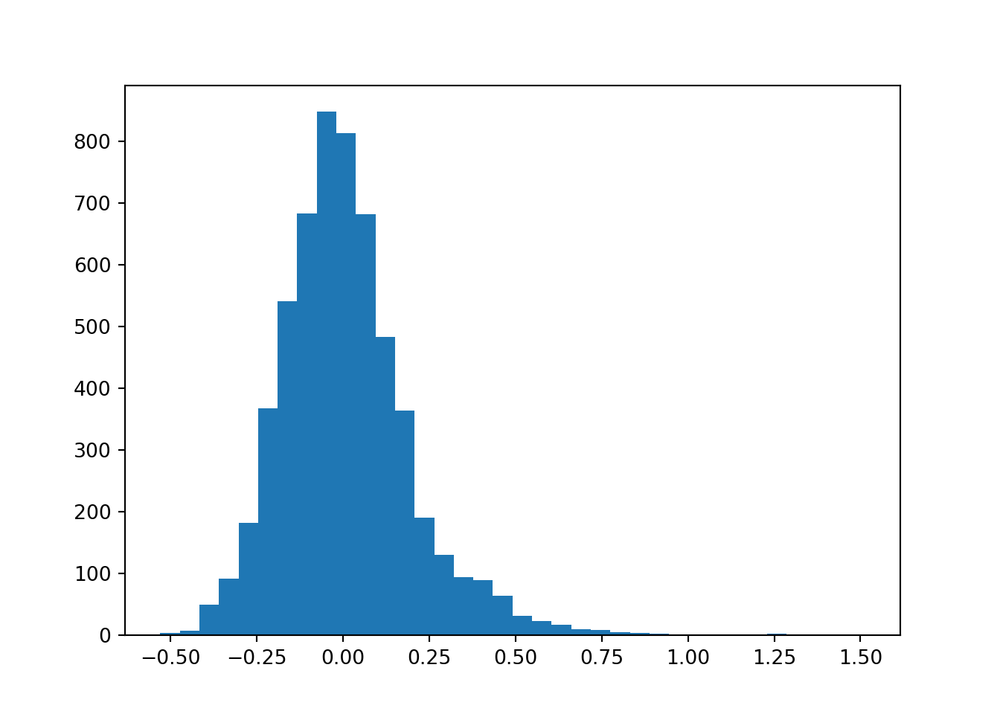
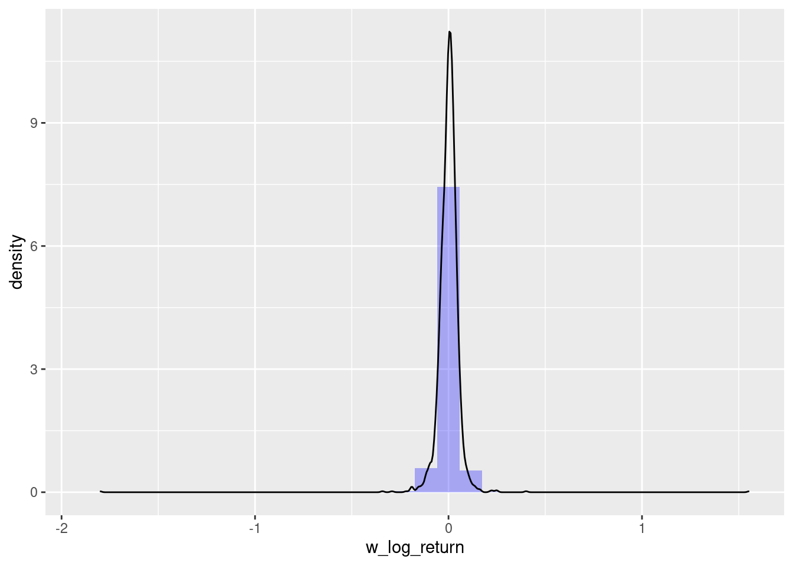

library(readr) # read_csv()
library(dplyr) # mutate(), filter()
library(lubridate)
library(ggplot2)
df_spy <- read_csv('../../../raw_data/SPY.csv') |>
select(date, adjClose) |>
arrange(date) |>
mutate(return = log(adjClose / lag(adjClose))) |>
filter(date > '2018-01-01')
df_amd <- read_csv('../../../raw_data/AMD.csv') |>
select(date, adjClose) |>
arrange(date) |>
mutate(return = log(adjClose / lag(adjClose))) |>
filter(date > '2018-01-01')This post is about summarizing the various statistical moments when doing quantitative finance. The focus is on the asset returns. From a previous post, we already know that financial asset returns do not follow a normal distribution (too peaked at the mean and fat tails).
We’ll show these parameters using both R and python.
We’ll use the SPY as a low-ish vol asset and AMD as an equity with higher vol. We only use the last 5 years of data (from 2018 and beyond)
Let’s first load our libraries and the 2 data frame worth of prices.
Mean
The mean is our first moment. We’ll cons
Mathematically speaking, we define the mean as \[\sum^{n}_{i=1} \frac{r_i}{n}\]
- \(r_i\) is the return of the i-th observation
- using log return
- \(n\) is the number of observation
Standard Deviation
Standard deviation is the second moment.
\[\sigma = \sqrt{\frac{\sum(x_i - \mu)^2}{n}}\] In the case of a sample: \(s = \sqrt{\frac{(x_i - \bar{x})^2}{n-1}}\)
The variance is the square of the standard deviation. There is this neat little alternative expression of variance (I like the way it sounds).
Variance is the difference between the mean of the square and the square of the mean.
Here is how it goes:
\[\sigma^2 = \frac{\sum(x_i-\mu)^2}{n} = \frac{\sum(x_i)^2}{n} - 2 \frac{\sum(x_i \mu)}{n} + \frac{\sum(\mu)^2}{n}\]
Considering
- \(\frac{\sum(x_i \mu)}{n} = \mu \frac{\sum(x_i)}{n} = \mu \mu=\mu^2\)
- and considering \(\frac{\sum(\mu)^2}{n} = n \frac{\mu^2}{n} = \mu^2\), we can re-write our variance like this
\[\sigma^2 = \frac{\sum(x_i)^2}{n} - 2 \mu^2 + \mu^2 = \frac{\sum(x_i)^2}{n} - \mu^2\]
Coefficient of variation
The coefficient of variation is not a statistical moment, but considering it is the ratio of the first 2 moments (ratio of sd to the mean), we include it here as well. It allows to compare together 2 different distributions (that have different mean and sd).
\[CV = \frac{\sigma}{\mu}\]
Or in the case of a sample \(CV = \frac{s}{\bar{x}}\)
Skewness
Skewness
Skewness is measure of asymmetry of a distribution (or actually lack of). How symmetric around the mean is the distribution? A standard normal distribution is perfectly symmetrical and has zero skew. Other examples of zero-skewed distributions are the T Distribution, the uniform distribution and the Laplace distribution. However, other distributions don’t have zero skew.
In a zero skew distribution, the mean = the median and the distribution is symmetric.
In a sense, skewness is quantifying for us how far is the median from the mean.
Mathematically, we define skewness as
\[\frac{\frac{1}{n} \sum(x_i - \bar{x})^3}{\sqrt{ \left( \frac{1}{n} \sum(x_i - \bar{x})^2 \right)^3}} \tag{1}\]
In the case of a sample, we’ll multiply Equation 1 by a factor of \(\frac{\sqrt{n(n-1)}}{n-2}\)
- skenwess = 0 ==> normally distributed
- \(-0.5 \leq skewness \leq 0.5\) ==> moderately skewed
- \(skewness \leq -1\) or \(skewness \geq 1\) ==> highly skewed
In finance, understanding skewness can help investors understand probable future outcomes. Negative skewness (left-tail) in investment returns would indicate a greater probability of large losses, while positive skewness (right-tail) would indicate a higher chance of large gains.
Kurtosis
Kurtosis
Kurtosis is a measure that describes the shape of a distribution’s tails in relation to its overall shape. A distribution can be infinitely peaked with low kurtosis, and a distribution can be perfectly flat-topped with infinite kurtosis. Thus, kurtosis measures “tailedness,” not “peakedness.”
Because, we raised the difference of a data point to its mean to the 4th power, it is really the data points far away from the mean that do participate to the kurtosis.
“increasing kurtosis is associated with the “movement of probability mass from the shoulders of a distribution into its center and tails.” (Someone important who got published and knew his stuff!)
Mathematically, we define kurtosis as
\[\frac{\frac{1}{n} \sum(x_i - \bar{x})^4}{ \left( \frac{1}{n} \sum(x_i - \bar{x})^2 \right)^2} \tag{2}\]
Some statistical packages are providing excess kurtosis by subtracting 3 to the kurtosis value. So for a data set that is perfectly normally distributed, we expect the excess kurtosis to be 0.
There are 3 categories of kurtosis: leptokurtic (positive excess kurtosis), mesokurtic (aka normal distribution), platykurtic.
- A kurtosis greater than 3 => leptokurtic
- A kurtosis around 3 => mesokurtic
- A kurtosis less than 3 => platykurtic
A Student’s T distribution with degree of freedom 4 has infinite kurtosis (huge peak and tails + narrow shoulders)
Most equities display a leptokurtic behavior (skinny at the mean - most returns are clustered around the mean) and narrow shoulders and fat tails.
Kurtosis helps understand the extremities in the data by measuring the “tailedness.” High kurtosis (‘Leptokurtic’ data) indicates a distribution with tail data exceeding the tails of the normal distribution. This means there are more chances of outliers, indicating a “heavy-tailed” distribution and potentially higher risk in financial contexts. Especially in finance, kurtosis is critical to assess market volatility. Higher kurtosis indicates more frequent significant market movements than expected for a normal distribution.
Using Python
import numpy as np
import pandas as pd
amd = pd.read_csv('../../../raw_data/AMD.csv')
x = amd['adjClose']
returns_21d = (x / x.shift(21) - 1).dropna()
returns_21d_log = np.log(x / x.shift(21)).dropna()
mean_21dret = np.mean(returns_21d)
mean_21d_log_ret = np.mean(returns_21d_log)
std_21dret = np.std(returns_21d)
std_21d_log_ret = np.std(returns_21d_log)
print("The mean rolling 21 days return is: %s" % round(mean_21dret, 5))The mean rolling 21 days return is: 0.00886print("The mean rolling 21 days log return is: %s" % round(mean_21d_log_ret, 5))The mean rolling 21 days log return is: -0.00794print("The standard deviation of the rolling 21 days return is: %s" %round(std_21dret, 5))The standard deviation of the rolling 21 days return is: 0.19053print("The standard deviation of the rolling 21 days return is: %s" %round(std_21d_log_ret, 5))The standard deviation of the rolling 21 days return is: 0.18162An histogram of the returns will help visualize the center and spread of the data.
import matplotlib.pyplot as plt
plt.hist(returns_21d, bins = 'rice', label = 'Rolling 21-days return')
plt.show()
We are seeing a larger right tail with indeed the mean looking around 0. An other to visualize this and putting emphasis on the outliers would be to plot the returns on a box-and-whiskers plot.
plt.boxplot(returns_21d, labels = ['Rolling 21-days return']){'whiskers': [<matplotlib.lines.Line2D object at 0x79cf28061420>, <matplotlib.lines.Line2D object at 0x79cf280616c0>], 'caps': [<matplotlib.lines.Line2D object at 0x79cf28061960>, <matplotlib.lines.Line2D object at 0x79cf28061c00>], 'boxes': [<matplotlib.lines.Line2D object at 0x79cf28061180>], 'medians': [<matplotlib.lines.Line2D object at 0x79cf28061ea0>], 'fliers': [<matplotlib.lines.Line2D object at 0x79cf28062140>], 'means': []}plt.show()from scipy.stats import skew, skewtest, kurtosis
print('The skew of 21-day returns is: %f' % round(skew(returns_21d), 3))The skew of 21-day returns is: 1.135000print('The kurtosis of 21-day returns is %f' % round(kurtosis(returns_21d), 3))The kurtosis of 21-day returns is 3.789000# now checking on log returns
print('The skew of 21-day log returns is: %f' % round(skew(returns_21d_log), 3))The skew of 21-day log returns is: 0.225000print('The kurtosis of 21-day log returns is %f' % round(kurtosis(returns_21d_log), 3))The kurtosis of 21-day log returns is 1.004000The skew value is quite large and positive which confirms the right tail of the histogram
skewtest(returns_21d)SkewtestResult(statistic=28.7983570677612, pvalue=2.2490101247716843e-182)Very small p-value. We reject the null-hypothesis. The distribution is not symetrical.
Transformation to reduce skewness and kurtosis
Why do we care about skewness and kurtosis? Many of the statistical tests and machine learning algorithms are making assumptions on the type of distribution (often assuming the data are normally distributed). Skewness and kurtosis are part of the tool box to check the normality of the data.
There are 2 types of transformation one can do to transform data to a more normal distribution.
Let’s consider weekly oil price (as per the FED Bank). I am using here a commodity as they are known to be positively skewed (as opposed to equities which tends to be negatively skewed)
Log-transformations
Log transformations tends to reduce the spread of the data. They are appropriate for right-skewed data that is the tail is on the right side of the data. Majority of the data are on the left side with few extreme data on the right side.
In the case of left-skewed data, a log transformation will accentuate that skewness even more.
Also you cannot log negative values (duh!)
The effect of a log transformation on dummy data looks like 
The points that were all close to each other are now more spread out. For low values, the log curve is pretty steep in increase the spread. And for the more extreme values (on the right side) log bring them closer to each others (curve at higher values is less steep, lower gradient).
library(readr)
library(dplyr)
w_oil <- read_csv('../../../raw_data/WCOILWTICO.csv') |>
mutate(w_log_return = log(WCOILWTICO / lag(WCOILWTICO)),
w_return = WCOILWTICO / lag(WCOILWTICO))
library(moments)
skewness(w_oil$w_return, na.rm = T)[1] 27.9621kurtosis(w_oil$w_return, na.rm = T)[1] 1081.682library(ggplot2)
ggplot(w_oil, aes(x = w_return)) +
geom_histogram(aes(y = after_stat(density)), alpha = 0.3, fill = 'blue') +
geom_density()Applying now the same process (histogram, skewness and kurtosis) on our log transformed returns and checking the results.
skewness(w_oil$w_log_return, na.rm = T)[1] -3.073457kurtosis(w_oil$w_log_return, na.rm = T)[1] 336.4981ggplot(w_oil, aes(x = w_log_return)) +
geom_histogram(aes(y = after_stat(density)), alpha = 0.3, fill = 'blue') +
geom_density()
Indeed we have a slightly more normal distribution of data (although, we still have both skewness and kurtosis)
Box-Cox transformation
The Box-Cox transformation is a statistical technique used to transform non-normal data into a more normal distribution. It is named after George Box and John Tukey, who introduced the method in 1964.
The Box-Cox transformation is based on the idea that many non-normal distributions can be approximated by a power transformation of a normal distribution. The power transformation is given by:
\[\begin{equation} Y_i^{(\lambda)} = \left\{ \begin{aligned} \frac{Y_i^{\lambda} -1}{\lambda} \; \space (\lambda \neq 0) \\ log(Y_i) \; \space (\lambda = 0) \end{aligned}\right. \end{equation}\]
If \(\lambda\) equal …
- 2: square transformation
- 1: no transformation needed; produces results identical to original data
- 0.50: square root transformation
- 0.33: cube root transformation
- 0.00: natural log transformation
- -0.50: reciprocal square root transformation
- -1.00: reciprocal (inverse) transformation
Once data have been transformed, we will need to apply the inverse transformed back at some point. The inverse transformation is using the log function (inverse of exponent!)
\[\begin{equation} Y_i = \left\{ \begin{aligned} exp \left(\frac{ log(1 + \lambda Y_i^{(\lambda)})}{\lambda} \right) \; \space (\lambda \neq 0) \\ exp(Y_i^{\lambda}) \; \space (\lambda = 0) \end{aligned}\right. \end{equation}\]
How is lambda chosen? Using maximum likelihood.
Let’s apply the transformation to our oil data using the tidymodel approach with the recipes library.
library(recipes)
dat <- w_oil |> na.omit() |> select(w_return)
recipe_bc <- recipe(~ w_return, data = dat) |>
step_BoxCox(w_return) |>
# the estimating of lambda step
prep(training = dat, retain = TRUE)
# to check the recipe steps
tidy(recipe_bc)# A tibble: 1 × 6
number operation type trained skip id
<int> <chr> <chr> <lgl> <lgl> <chr>
1 1 step BoxCox TRUE FALSE BoxCox_KJpsU# to check the estimation of lambda
tidy(recipe_bc, number = 1)# A tibble: 1 × 3
terms value id
<chr> <dbl> <chr>
1 w_return 0.115 BoxCox_KJpsU# transforming the data using the estimated lambda
w_oil_bc <- juice(recipe_bc)
w_oil$w_return_bc <- c(NA, w_oil_bc$w_return)
skewness(w_oil$w_return_bc, na.rm = T)[1] 0.8642865kurtosis(w_oil$w_return_bc, na.rm = T)[1] 324.378library(ggplot2)
ggplot(w_oil, aes(x = w_return_bc)) +
geom_histogram(aes(y = after_stat(density)), alpha = 0.3, fill = 'blue') +
geom_density()